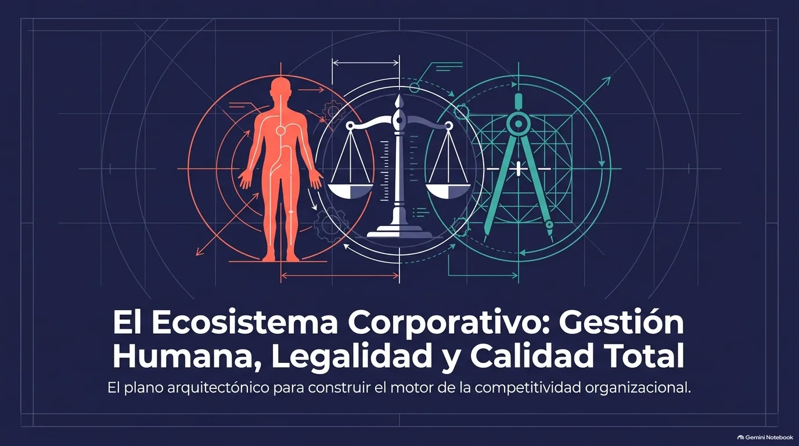
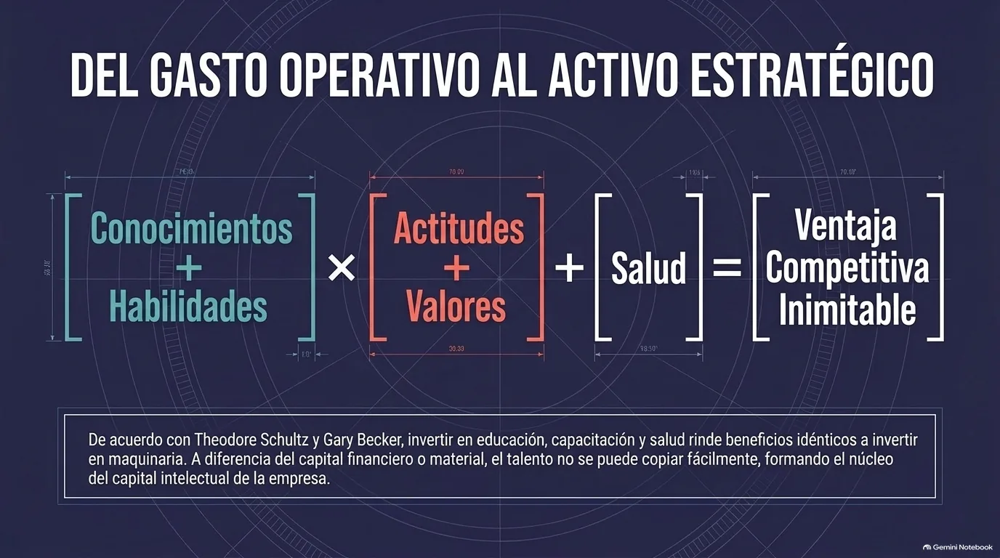
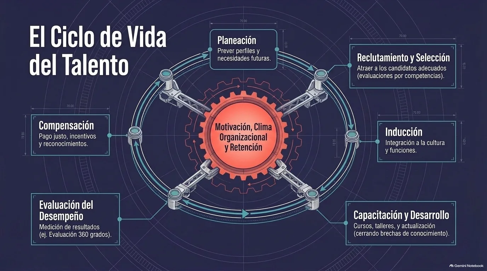

Unidad IV · Tema 4.1
Capital Humano
Las personas que integran una empresa no son solo un costo de operación: sus conocimientos, habilidades, actitudes y valores son el recurso que planea, ejecuta, controla e innova en todos los procesos. Gestionar bien ese capital humano es una de las fuentes de ventaja competitiva más difíciles de imitar.

Nota. Infografía del material didáctico de la Unidad 4 de Gestión Empresarial (ESCOM - IPN), generada con Gemini Notebook.
4.1.1¿Qué es el capital humano?
El capital humano es el conjunto de conocimientos, habilidades, experiencias, capacidades, actitudes y valores que tienen las personas que forman parte de una empresa y que, cuando se ponen en práctica, generan valor económico y ayudan a lograr los objetivos de la organización.
El término se popularizó con los trabajos de los economistas Theodore Schultz (1961) y Gary Becker (1993), quienes sostuvieron que invertir en la educación, la capacitación y la salud de las personas produce beneficios comparables a los de invertir en maquinaria o infraestructura. A partir de esta idea, los trabajadores dejan de verse como un gasto o un recurso más y pasan a considerarse un activo estratégico y la principal fuente de ventaja competitiva de la empresa.
4.1.2Componentes del capital humano
El capital humano se integra por varios elementos que, en conjunto, determinan el potencial de las personas dentro de la empresa:
Conocimientos
Información y saberes técnicos o profesionales que se adquieren con la educación formal y la experiencia.
Habilidades y competencias
Capacidad de aplicar los conocimientos en situaciones reales: habilidades técnicas del puesto y habilidades blandas como comunicación, trabajo en equipo, liderazgo y resolución de problemas.
Actitudes y valores
Responsabilidad, compromiso, ética y disposición para aprender; influyen en cómo se desempeñan las personas y cómo se relacionan.
Salud, motivación y experiencia
Factores que también afectan directamente la productividad de cada colaborador.

Nota. Infografía del material didáctico de la Unidad 4, con base en Schultz (1961) y Becker (1993).
4.1.3Importancia del capital humano en la empresa
Son las personas quienes planean, ejecutan, controlan e innovan en todos los procesos de la empresa, así que la calidad de su desempeño determina en buena parte los resultados. A diferencia de los recursos materiales o financieros, que la competencia puede conseguir o copiar con relativa facilidad, el talento, la creatividad y el compromiso de un equipo son muy difíciles de imitar; por eso constituyen una ventaja competitiva que se mantiene en el tiempo.
Cuando se invierte en él
Cuando se descuida
4.1.4Gestión del capital humano
La gestión del capital humano es el conjunto de políticas y prácticas que sirven para atraer, desarrollar, motivar y retener a las personas que la empresa necesita para cumplir sus objetivos. Es la función que tradicionalmente se conoce como departamento de recursos humanos, y su propósito es maximizar la productividad de la organización optimizando la efectividad de sus colaboradores. Sus procesos forman un ciclo continuo:
| Proceso | ¿En qué consiste? |
|---|---|
| Planeación de recursos humanos | Prever cuántas personas y con qué perfiles va a necesitar la organización. |
| Reclutamiento y selección | Atraer candidatos e incorporar a los más adecuados para cada puesto. |
| Inducción | Dar a conocer a los nuevos colaboradores la cultura, las normas y las funciones de la empresa. |
| Capacitación y desarrollo | Ofrecer oportunidades para actualizarse y crecer profesionalmente. |
| Evaluación del desempeño | Medir los resultados de cada persona y detectar en qué puede mejorar. |
| Compensación y reconocimiento | Sueldos, prestaciones e incentivos que retribuyen de forma justa el esfuerzo y mantienen la motivación. |

Nota. Infografía del material didáctico de la Unidad 4 de Gestión Empresarial (ESCOM - IPN), generada con Gemini Notebook.
4.1.5Motivación, clima laboral y retención del talento
Para que el capital humano rinda al máximo no basta con contratar y capacitar: también hay que mantener un ambiente de trabajo que cuide el bienestar y el compromiso de las personas. La motivación —los factores que impulsan a una persona a actuar para alcanzar una meta— se fortalece con un liderazgo cercano, reconocimiento al trabajo bien hecho, oportunidades de crecimiento y buenas condiciones laborales.
El clima organizacional es la percepción que tienen los empleados sobre su ambiente de trabajo, e influye directamente en su satisfacción y desempeño. Cuando el clima es positivo y la gente se siente valorada, aumenta la lealtad hacia la empresa y baja la rotación, lo que reduce los costos de reclutamiento y evita perder talento clave.
4.1.6Capital humano y competitividad empresarial
Con una tecnología que avanza rápidamente y una competencia global, el capital humano se volvió uno de los factores que más influyen en la competitividad. Las empresas que invierten de forma constante en la formación y el desarrollo de sus colaboradores innovan más, ofrecen mejor calidad y responden más rápido a los cambios del mercado. Entre los retos actuales del área están la digitalización, la gestión de la diversidad y la inclusión, y la retención del talento en un mercado muy competitivo.
Además, el capital humano es parte fundamental del capital intelectual de la empresa, junto con otros dos componentes:
| Componente | Qué incluye |
|---|---|
| Capital humano | Conocimientos, habilidades, actitudes y experiencia de las personas. |
| Capital estructural | Procesos, sistemas y conocimientos que se quedan en la organización aunque las personas se vayan. |
| Capital relacional | Relaciones de la empresa con clientes, proveedores y otros grupos de interés. |
Escape room: Capital humano
Comprueba tu comprensión
Pon a prueba lo que aprendiste sobre el concepto, los componentes y la gestión del capital humano.